来源：https://k1sk0qpsxpy.feishu.cn/docx/T9zHdhQM6or7YSxpSvEceLhznvb
圈友们大家好，我是山川，这是我的第一次发文，各位圈友多多指教！
在这个单人全链路电商的情况下，相信各位朋友都有很多难言之隐，不管是店铺运营还是内容创作上都需要一步一精进，这对于快节奏的电商来讲，小白需要学习的东西很多，而往往最需要简单重复的动作会耗费很多心力，个体的力量是很微小的，一个人就是一支队伍，听起来很热血上头，执行起来头都大了！
今天我要分享的是内容创作，也就是混剪（这里不讲实拍，因为实拍个人没有经验，也欢迎大佬们进行实拍的剪辑指导）
可能有一些新入圈的圈友对于混剪的概念还有一些模糊，其实说白了就是把视频掰开揉碎，重新去组成一个新视频，这里有其他圈友不明白的可以参考奇杰老师的《【短视频混剪进阶】单人日产 200 条实战攻略》https://articles.zsxq.com/id_pdxeww52s052.html，本文适合有基础剪辑的同学，提供的是一个思路，每个平台对于混剪的容忍度不同，关于去重以及如何提高原创度可以参考航海手册，其中有关于视频号、抖音、小红书、快手等平台各大佬分享的有效信息，这里就不详细说明了
本文分成下载素材，分割素材、脚本解析、分类素材、批量合成替换素材、批量替换生成新草稿+批量导出草稿六个步骤为大家解析（再次重申、本文主讲一个思路，不提供如何过平台审核以及去重方法，相关内容可以在生财中进行搜索）
下载素材的方式有两种，针对了四个平台，其中抖音、快手、小红书三个平台用的是江湖工具箱，视频号用的是企业微信机器人。江湖工具箱免费，企业微信机器人付费（淘宝搜索视频号下载，会有很多）
江湖工具箱下载地址：www.jianghudata.com
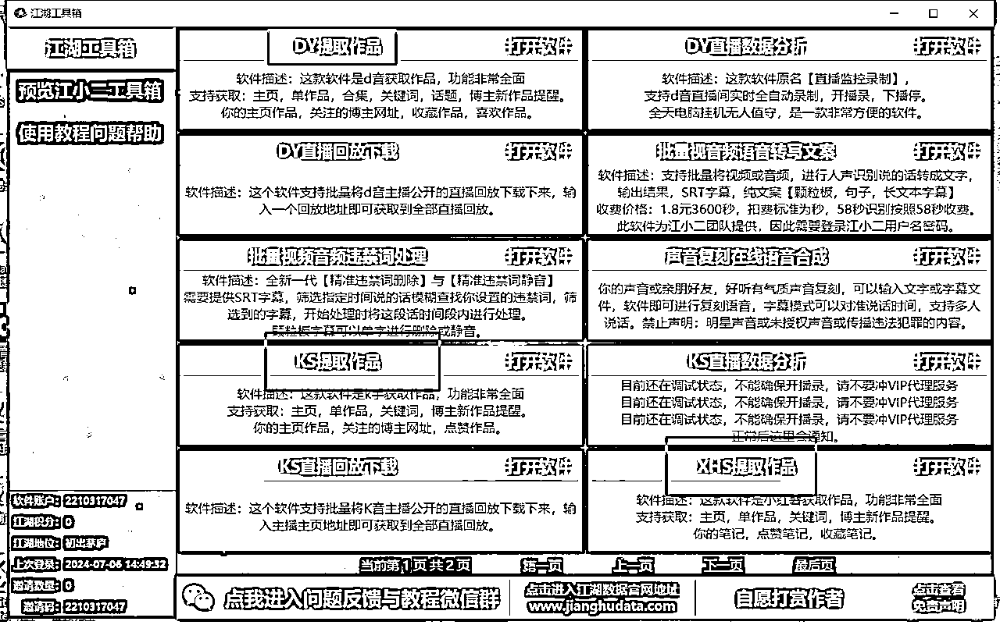
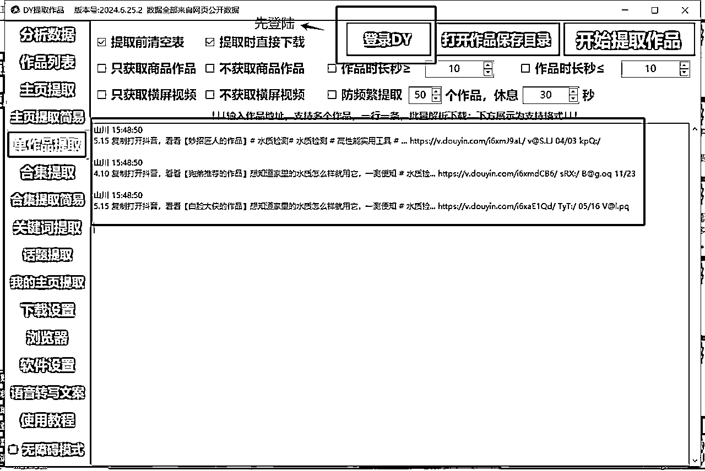
小技巧（以抖音为例）：在手机上把视频下载链接分享给 qq，用电脑全部复制粘贴到工具箱中，可以直接进行批量下载
1、分割素材前要先用去字幕工具把字幕全部去除
链接：https://pan.baidu.com/s/1RKdm60r2YffVgHY561mFSw?pwd=6666
提取码：6666
2、把去完字幕的视频进行分割，这里用的是 pr+me，可以批量分割后进行导出
链接：https://pan.baidu.com/s/1GK-WDZsBel_rOnjwBsGazg?pwd=6666
提取码：6666
（注意：pr+me 会安装在 c 盘，这个是目前我的电脑能够联动的方式，装在 d 盘我会运行不了，其他圈友可以试试别的安装空间，这样 c 盘会省出来 20G）
分割素材具体操作如下：
观看方式从左往右看，从上往下看（注意，分割素材的时候 pr 和 me 都要提前先打开）
以下 pr 的操作方式：
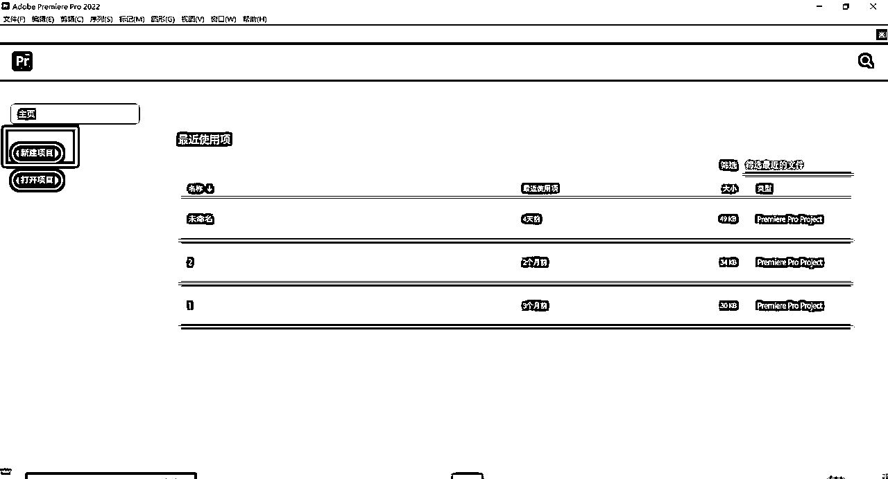
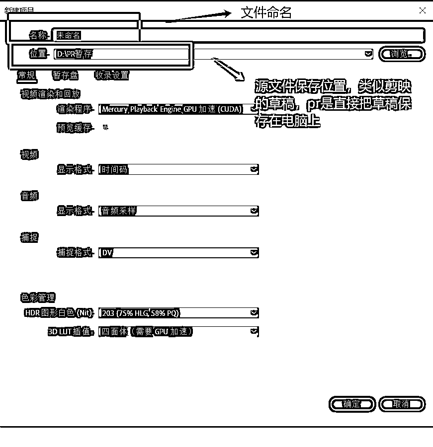
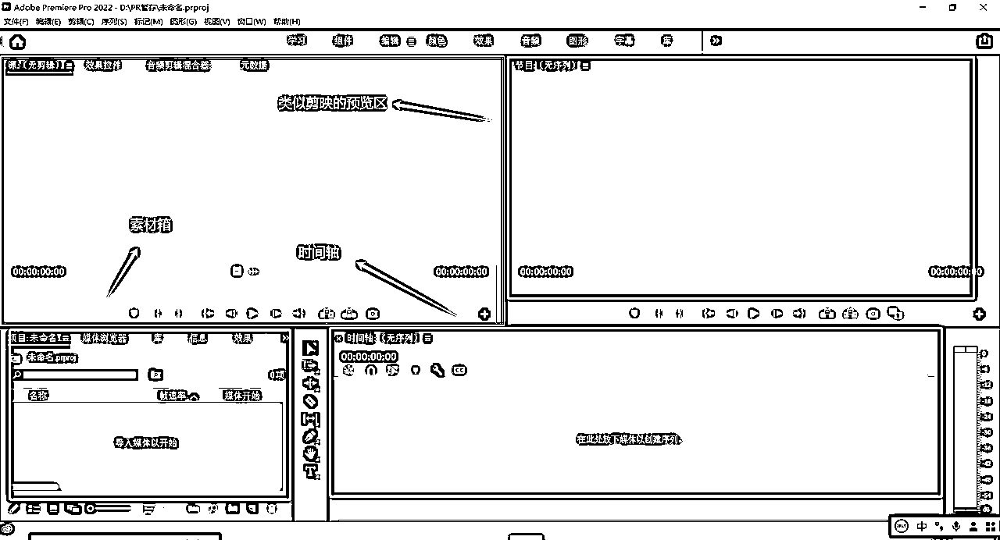
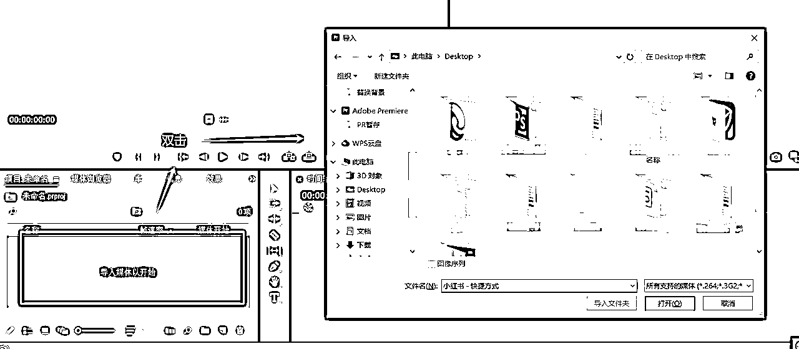
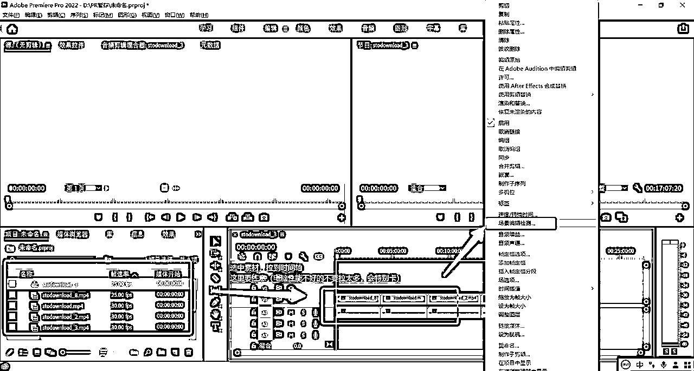
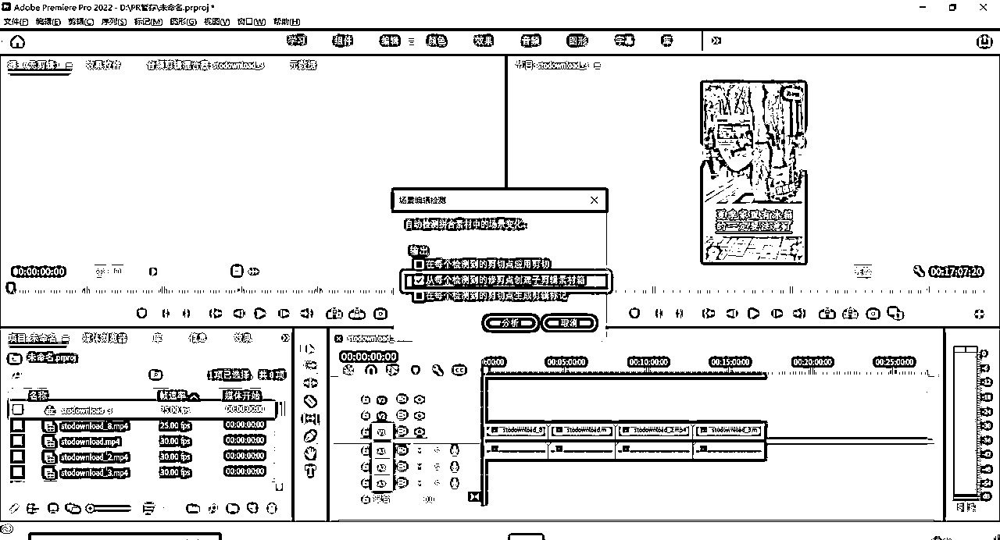
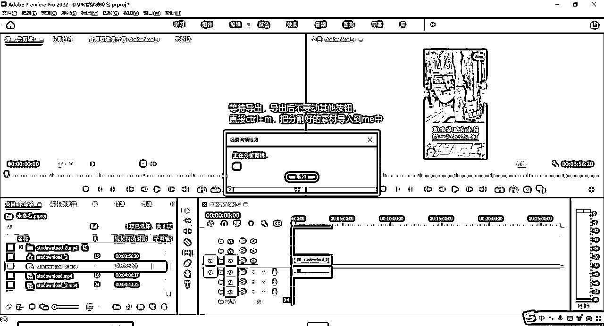
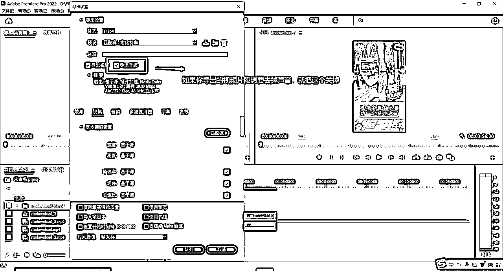
以下 me 的操作方式：
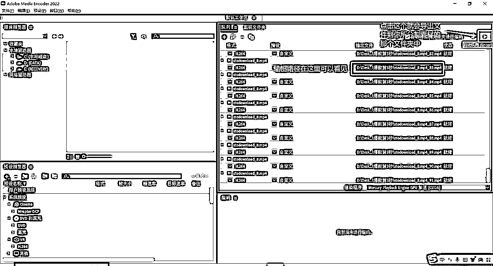
到这里分割素材也就好了，这个分割素材的原理是根据你视频的转场进行分割，并且转场需要"深"一点才能够识别出来，如果是淡入淡出的转场可能会识别不出导致分割失败，具体圈友们多分割几条视频就知道了其中的逻辑
脚本解析因人而异，作为电商使用，一般我个人会分为爆款前三秒-产品介绍-引导下单，从这三个部分入手去拆分视频脚本，再把这三个部分细致化到镜头的动作区分，下面我以某产品为（以下不做任何产品推荐，只做视频讲解）：
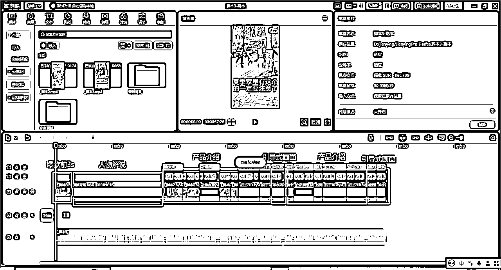
脚本可拆解为爆款前 3s-人物解说-产品介绍-引导式画面，这不是单纯的脚本拆解，还需要往深处去进行拆分，人物解说需要替换背景，产品介绍还涵盖有产品外观展示-功能展示-价格优势。如果是属于功能性用品，还需要把其各个优点进行细分，这里就不过多解释了，以当前视频为例，我将这一脚本分解为：爆款前 3s-人物讲解-产品介绍（外观展示+功能使用展示+价格优势说明）-引导下单。记住这个设置，后续所有动作全部围绕这个分解进行操作
有了脚本的分解，接下来就是分类素材，把刚刚第二步分割好的素材进行分类：
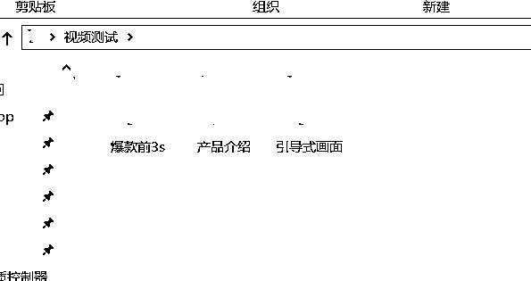
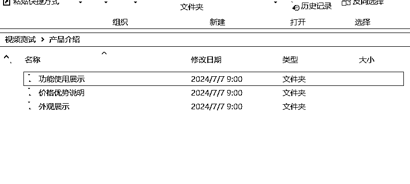
把分割好的素材一一对应到文件夹中，方便后续的操作
看到这里，你可能会在想，不是说软件生成混剪视频吗？软件呢？？？
来了来了，这就给客官们端上来
首先本文中出现的软件有需要付费的，也有可以免费试用的，软件与本人没有任何利益捆绑关系，各位可以酌情使用
在这个剪辑过程当中，需要用到两个软件，一个是批量合成视频，一个是批量替换视频以及导出视频，分别为：
1、AImiix-批量合成视频软件（由圈友@小辉 AI 教练开发）
文章地址（内含下载地址以及软件使用逻辑）：
2、剪辑逻辑
首先要明白一个逻辑，我们的视频是由脚本的拆解生成，在剪映当中，你需要的是把画面对应上脚本，从而实现一个新的混剪视频，那么画面替换中会出现一个问题，例如产品展示这一个部分的画面需要长度为 5s 的画面，而你分割出来的其他视频画面只有 2s 的，或者是 3s 的，这个时候你会把对应的画面进行减速或者加速处理后进行替换，也可以把两个画面组合在一起进行替换（剪映中，当你替换素材的画面时间长度小于被替换的草稿素材，无法进行替换）
那么就实现以下的步骤，脚本拆解出来的画面都需要有对应的视频画面可以进行替换！！！以第三步脚本解析为例，爆款前 3s-人物讲解-产品介绍（外观展示+功能使用展示+价格优势说明）-引导下单，刚刚在分类素材时，已经把对应的分割素材进行整理，接下来就是组合画面素材，把分割好的画面素材进行组合，实现画面长度的增加，已达到可替换脚本画面的长度
以下是利用 AImiix 进行画面的组合，爆款前 3s-人物讲解-产品介绍（外观展示+功能使用展示+价格优势说明）-引导下单，例如脚本中产品介绍（外观展示+功能使用展示+价格优势说明）的视频画面长度为 15s，其中外观展示占 5s，功能使用占 5s，价格优势占 5s，那么需要先把每个画面的视频合成超过 5s（尽量控制在 5s 内，可以使用配音合成，配音音量降低，不会影响到后续的替换导出）
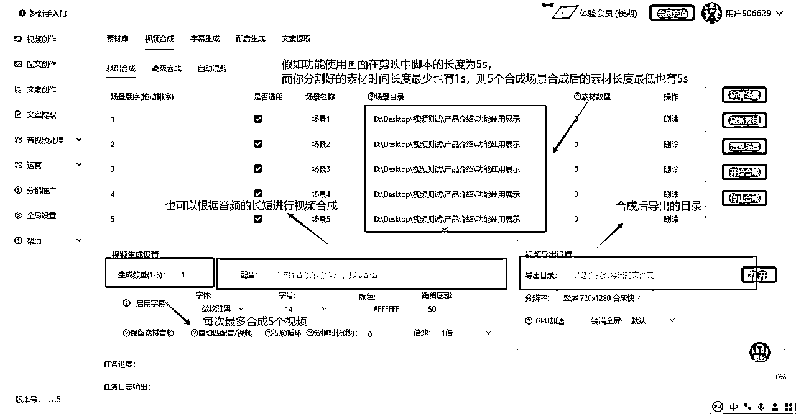
有了对应的替换画面之后，接下来的事情变得容易了，只需要把对应的素材批量替换到剪映的草稿中，这样就可以生成对应的新视频，那么接下来就是自动化替换+自动化导出
剪映自动化大师-批量替换以及批量导出视频软件
下载地址：https://friendpei.lxhfight.com/download
具体操作可以看作者的操作介绍：
https://www.bilibili.com/video/BV13H4y1w7yv/?buvid=XX662E867A46F271F673B4F0C3F2508671589&from_spmid=main.my-favorite.0.0&is_story_h5=false&mid=FkL8IWVEwt0R1Gk11E6pAQ%3D%3D&p=1&plat_id=116&share_from=ugc&share_medium=android&share_plat=android&share_session_id=2414a695-df01-4444-9081-c74ed00d245e&share_source=WEIXIN&share_tag=s_i&spmid=united.player-video-detail.0.0×tamp=1719464950&unique_k=dabci6L&up_id=3461576967325799
替换逻辑：软件替换素材的原理就是通过识别你草稿中素材的名称，对应到第5步的合成素材（爆款前 3s-人物讲解-产品介绍（外观展示+功能使用展示+价格优势说明）-引导下单），识别名称后进行对应，将文件夹中的素材随机选择进行替换
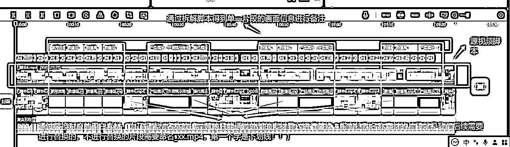
以下是个人的操作习惯：
第一步：把脚本先解析，在通过画面解析的备注做好命名素材，再根据画面解析的备注去合成素材（看第五步）并且归档到对应名称的文件夹中
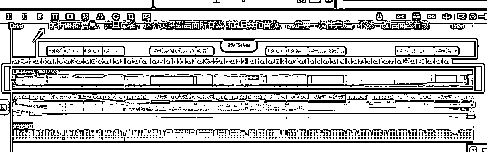
第二步：命名替换素材（可以在剪映中导出黑白画面进行命名，记得时长拉长）
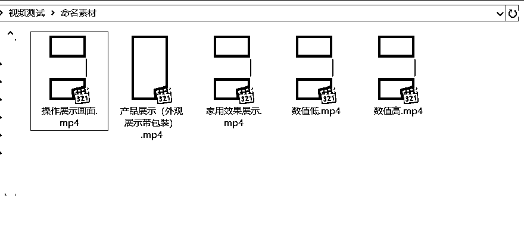
第三步：把你要替换进去的素材归档到对应的文件夹
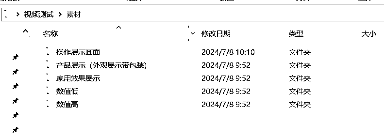
第四步：打开剪映大师，选择批量替换-分区混剪裂变替换素材，按照你想要的效果进行替换并且生成草稿
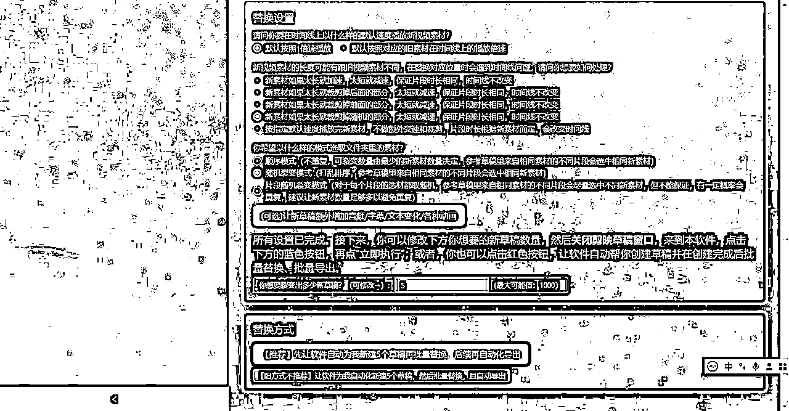
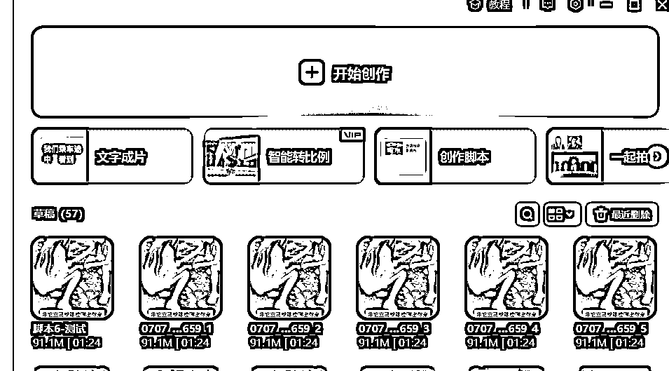
第五步：批量导出
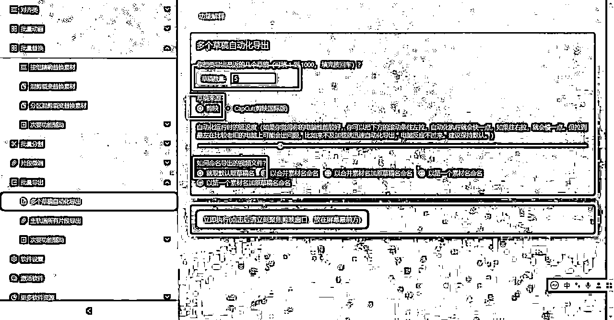
来到这里，跟着操作的同学可能已经发现，一顿操作下来，这混剪出来的可不止200个视频啊，最多一次能够生成1000个视频呢，哈哈确实是能够这样操作，但我们追求的不是数量，而是有效的视频，能够跑出去的视频！
去年4月份进生财，到现在已经一年有余，生财带给我的实属太多东西了，从懵懂进入互联网行业，看社群项目发布，到自己进入项目实操，打虚拟课程，再到干小红书电商+无人直播，到今年6月起跟着豪哥干快手数字人电商，感谢 @书豪 在电商路上的指导!!一路走来发现个体的力量很微小，只有抱团才能够度过这个寒冬，全链路电商没有容易的事情，愿电商人都能够一路高roi！